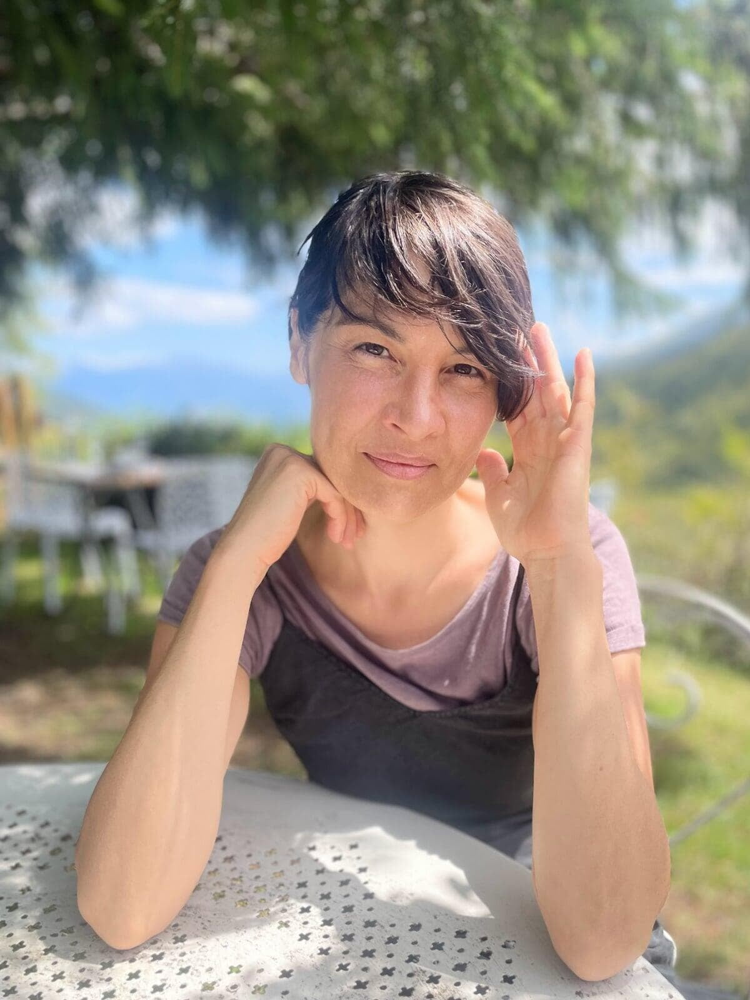

Marina Charpentier
- Psychopraticienne Transpersonnelle
- Accompagnements psycho-corporels et expérientiels avec les états de conscience élargis
- Facilitatrice en Respiration Holotropique (certifiée Grof® Breathwork)
- Hypnothérapeute (Hypnose Ericksonienne et Voyages Intérieurs Transpersonnels)
- Enseignante de Yoga (Vinyasa – Yin Yoga – Yoga du Son)

Quelques mots sur moi
Consultante en organisation et enseignant-chercheur en économie-gestion, je suis partie en 2008 en Afghanistan où j'ai vécu et travaillé pendant 10 ans dans le domaine du développement.
En 2018, j'ai vécu une profonde crise personnelle qui m'a amenée vers un nouveau chemin d'exploration intérieure où la pratique intensive du Yoga, de la méditation, l'utilisation du son et les expériences thérapeutiques en état de conscience élargie ont tenu une place centrale.
Formée au CesHum, la principale école portant la psychologie transpersonnelle en France, je propose aujourd'hui des accompagnements psychothérapeutiques fondés sur des approches à la fois verbales, psycho-corporelles, et transpersonnelles.
J'utilise notamment la Respiration Holotropique pour laquelle j'ai été formée dans le cadre du Grof Legacy Training, différentes techniques de Breathwork, mais également l'Hypnose Ericksonienne Transpersonnelle et les Voyages Intérieurs qui permettent d'aborder de manière plus directe certaines problématiques transgénérationnelles, pré et/ou périnatales, spirituelles, ou encore en lien avec les blessures de l'enfance, les deuils, les traumas ou les séparations difficiles.
J'ai par ailleurs créé en 2022 les ateliers « Yoga Transe » qui allient Breathwork et pratiques de Yoga, et qui se déclinent aujourd'hui sous la forme de retraites qui sont proposées plusieurs fois par an.
Je reçois en individuel et en petits groupes à mon cabinet situé à Paris 18ème près de la place de Clichy, en plus d'organiser régulièrement des stages de respiration holotropique dans différents lieux à Paris et en région.